Take one step, turn slightly, take a smaller step. Repeat a few hundred billion times. Behind the most famous unsolved problem in mathematics is a path that draws eyes, coils and mirror images. Partial-sum Spiral lets you explore it live and follow it in film, exactly, at scales no ordinary calculation can reach.
- 200 billionsteps in a single path, every one exact
- 1012 → 1022heights on the critical line, from a trillion to ten sextillion
- 300 millionterms you can explore live in a browser
- 100 filmsover three hours, all computed from the same sum
One sum. A hundred films.
The same arithmetic, followed into 3-D, down microscopes and up to heights of 1020. A few frames from the library:
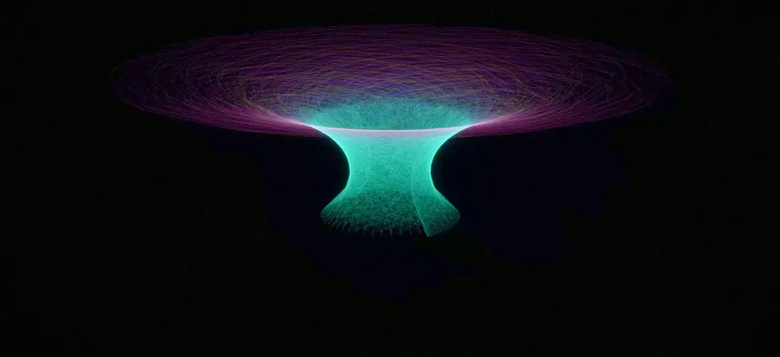
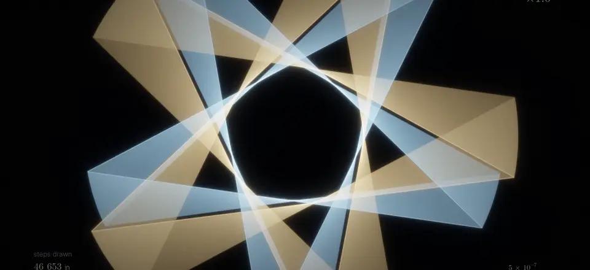
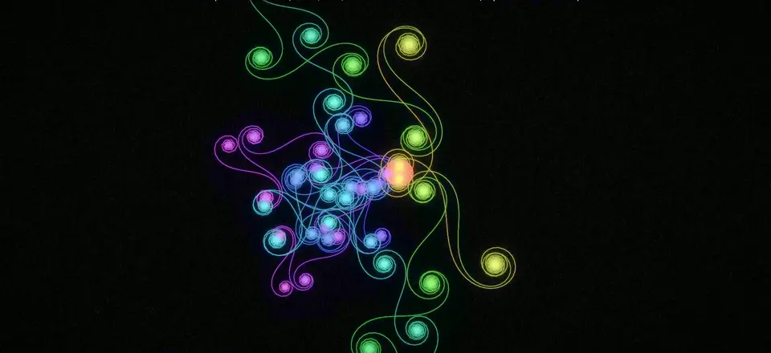
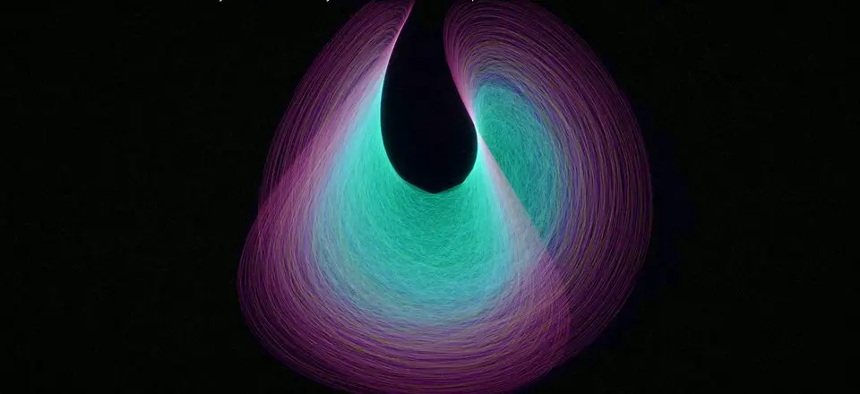
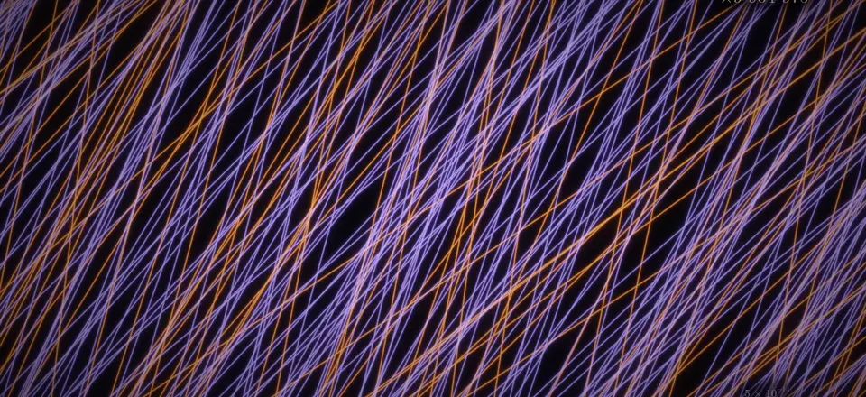
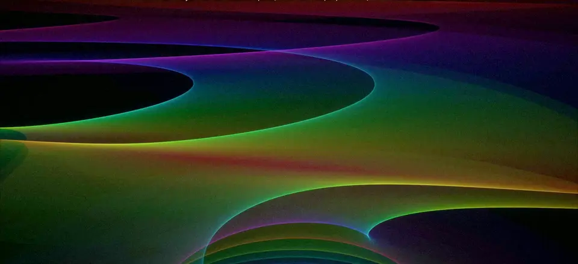
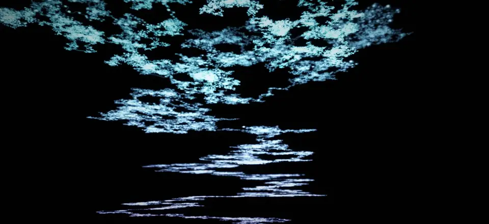
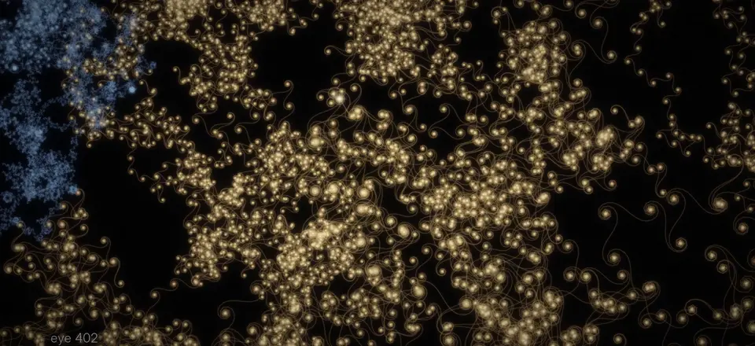
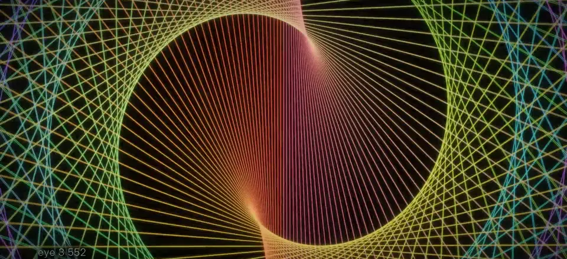
Every Eye v3 / 1:34
One journey along a single path: from an eye so dense it looks solid, down to the individual steps that make it, and on to the chaotic middle where the pattern breaks apart. Watch the 16-second excerpt below, or the complete 94-second film.
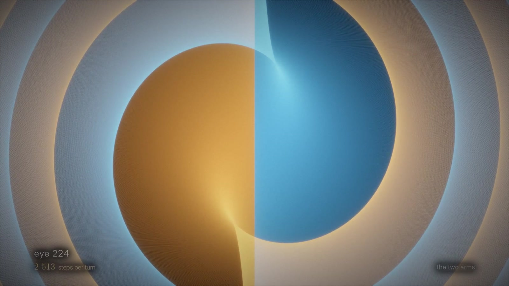
On-screen labels are part of the picture. Read a text description of the film.
Most pictures of zeta stop where it gets interesting.
The Riemann zeta function is built from an infinite sum. Draw that sum one term at a time, each term a short arrow laid end to end, and an unremarkable walk turns into spirals, symmetries and small structures nested inside larger ones. Animations of this exist, but they show the first few hundred steps at small heights, where an ordinary calculator copes.
Go higher and the picture quietly breaks. Each step’s direction depends on a number so large that ordinary computer arithmetic keeps only a few of the digits that matter. The spirals still look like spirals; they’re just the wrong ones, and nothing on screen warns you. Partial-sum Spiral keeps every step exact out to heights of a trillion and paths of 200 billion steps. It is two things: an interactive lab where you drag a point and watch the sum respond, and a set of films that fly through structures the small-height pictures never reach. I set the mathematical and visual direction and built all of it with coding agents.
Length from σ. Direction from t.
Every number s has two parts. The first, σ, sets how long each step is; steps shrink slowly as n grows. The second, t, sets which way each step points. Because the turn from one step to the next changes only gradually, long runs of steps line up and spiral together, then cancel and fall apart. Those runs are the curls and eyes in the films.
On the critical line, σ = ½, where the Riemann hypothesis lives, this plain sum never actually settles on ζ(s); it wanders forever. So the app keeps two things apart: the finite path you are looking at, and the true value of ζ computed independently. Alternating η sums, Euler–Maclaurin corrections and the functional equation show how other formulas reach the value the path can’t. The pictures are a way of seeing the problem, not a proof of anything about it.
Drag a point. Watch the sum respond.
The interactive app runs in a browser. Pick a point s, and the path redraws itself as you move.
- Watch analytic continuation happen. At the first zero, the plain sum spirals outward forever, while an alternating version of the same series closes in on the true value: zero.
- See 1 + 2 + 3 + … go to infinity while the marker for the true value sits calmly at −1/12, and add the correction terms that bend the runaway path back onto it.
- Paint the whole function. Domain colouring shows every value at once; zeros appear where all the colours meet.
- Draw a loop and count the zeros inside it, read straight off how many times the image winds around the origin.
- Lift the path into 3-D, where the final spiral becomes a helix and each regime stacks into its own coil.
- Swap the series. Try Dirichlet L-functions, the Möbius and Liouville functions, power series, or a formula of your own.
- Push it to 300 million terms, with a camera that follows the structure the path is circling instead of the raw tip.
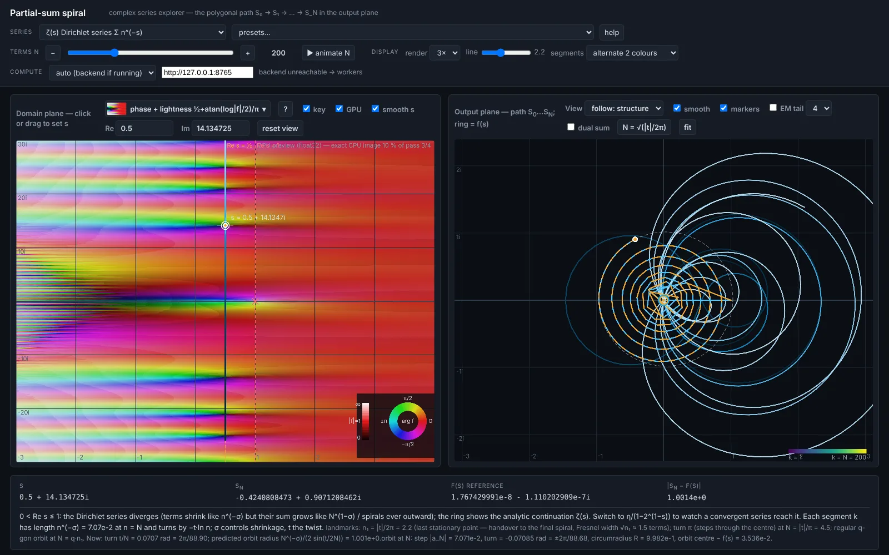
Open the lab Runs entirely in your browser, with nothing to install. Designed for a desktop or tablet screen.
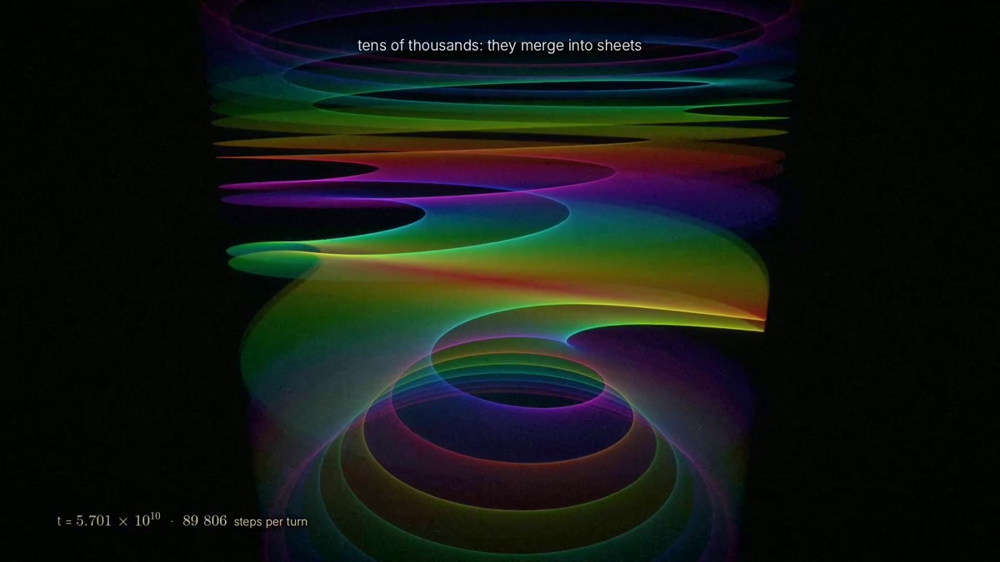
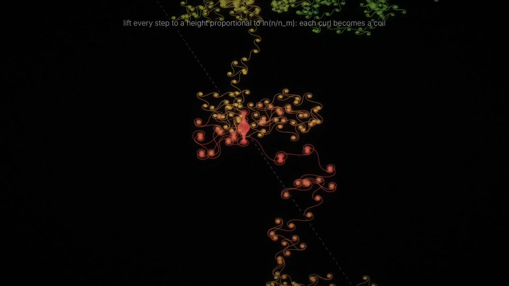
From sheets to symmetry.
The Eye in Depth II / 1:12
Rise through the eye as its paths stack into sheets.
The Mirror / 1:35
A path that mirrors itself around its middle, then folds into coils.
The Shape of Zeta v6
A longer film in progress that explains, step by step, how the arithmetic produces the shapes. Shown here as a storyboard.
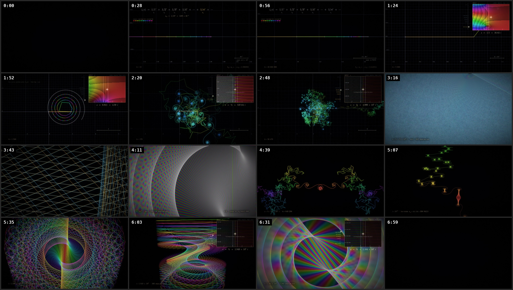
Keep the small turns when the numbers get large.
Each step’s direction is the angle t × log n, and only what’s left over after the whole turns matters. At t = 1012 that product is in the trillions, and ordinary 64-bit arithmetic keeps only a few digits of the leftover part that actually draws the picture. Get it wrong and the spirals still look like spirals; they’re just the wrong ones. Keeping that fraction exact is the core engineering problem.
The interactive app uses double-double phase arithmetic, error-compensated running totals and a multi-resolution store of the path, computed in parallel in the browser with Web Workers. It also offers domain colouring, winding-number readouts, general Dirichlet series and a 3-D lift. The film pipeline adds high-precision phase anchors, level-of-detail drawing so it never has to draw every term in every frame, compiled render loops, resumable render chunks, and separate picture and annotation layers.
| System | Scale | What that means |
|---|---|---|
| Interactive app | Up to 3 × 108 terms in the interface | Explore paths of up to 300 million terms live in a browser. The screen draws a budgeted summary of the path, not every term. |
| Full-path film data | t = 1012 N = 2 × 1011 | A C program walks all 200 billion steps and keeps an adaptive summary; the renderer picks the detail each frame needs. |
| Higher window studies | t near 1022 | Look at a 4,000-step window around term ~39.9 billion directly, without summing the billions of steps before it. |
Exact by construction.
A picture is only worth studying if every line in it is where the mathematics says it should be. So the arithmetic that sets each step’s direction is never done in plain floating point: it is carried in double-double precision and reduced exactly, and the results are checked against high-precision references. The details below record what was measured, against what, and where the checks stop.
Numerical verification and performance evidence
Interactive app. The app ships with 88 embedded test cases. On a fresh run, the largest partial-sum error (relative to max(1, |reference|)) was 3.62 × 10−13; the zeta reference agreed with embedded mpmath values to 2.49 × 10−12. One case misses the self-test’s strict 10−12 threshold by a hair (1.008 × 10−12), so the self-test currently reports pass: false. The October 16 design note records 137 checks against 30-digit mpmath through t = 1013 and a 171-million-terms-per-second run on 20 processes with numba; that Python backend and suite weren’t recovered for this review, so those figures are historical.
Higher. The implementation uses 200-bit fixed-point logarithms generated at 75 decimal digits, integer phase reduction, then float64 phases and complex128 coordinates. The recorded comparison to 90-digit mpmath samples eight offsets at each of eight heights through 1022, with maximum reported discrepancy 1.1 × 10−16 turns. Full-sum gap comparisons in that report stop at 1012.
A fresh bounded check compared six local steps at each nominal height 1013 and 1022 with 90-digit phase calculations. Maximum step differences relative to the pivot step were 9.82 × 10−16 and 9.11 × 10−16. This checks sampled local steps, not full sums or zeta values at those heights.
The recorded 3.4–4.6 ms timings refer to a 4,000-term local data calculation. Film drawing and encoding are separate costs. No current end-to-end throughput benchmark is claimed here.
Source map and media provenance
Film source reviewed at on-the-line commit d7fd5c32569e4193281f50d3649435a898ad1d62: data/spiral.c, m2.py, higher/facts.py, higher/facts-notes.md, higher/render.py, and LAYERS.md. The delivered interactive snapshot is Apps & images/complex_spiral.html; its October 16 design note is a historical record, not a current source-release manifest.
The pictures and excerpts here come directly from the retained local film copies: Every Eye v3, The Eye in Depth II, and The Mirror. Excerpts are scaled, re-encoded, and silent; no generated imagery has been added. Exact source hashes, time ranges, and transformation commands are retained in the local preparation record. A historical source commit and dirty patch linking each original export to its render were not available.
Higher is discussed as an implementation study rather than used as flagship media: its renderer can fall back to a stationary-phase model, and the exact data mode of the retained export has not been established. The Shape of Zeta v6 is represented here only by its storyboard contact sheet. Stylized Wonder films are excluded from engine-output evidence.
Mathematical context and prior work
Partial-sum paths, curlicues, and their relation to the zeta function have a long mathematical history. This project’s contribution is its combination of precise computation, interactive views, camera and scale choices, and films that expose the structure. It makes no claim to have invented partial-sum spirals or proved a new result about zeros.
An earlier geometric treatment: Nickel, Geometry of the Riemann Zeta Function (2013). Definitions and analytic continuation: NIST Digital Library of Mathematical Functions, definitions and analytic continuation of ζ.